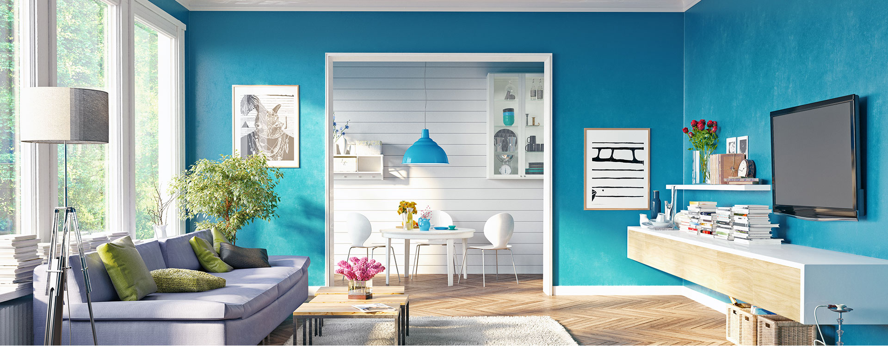
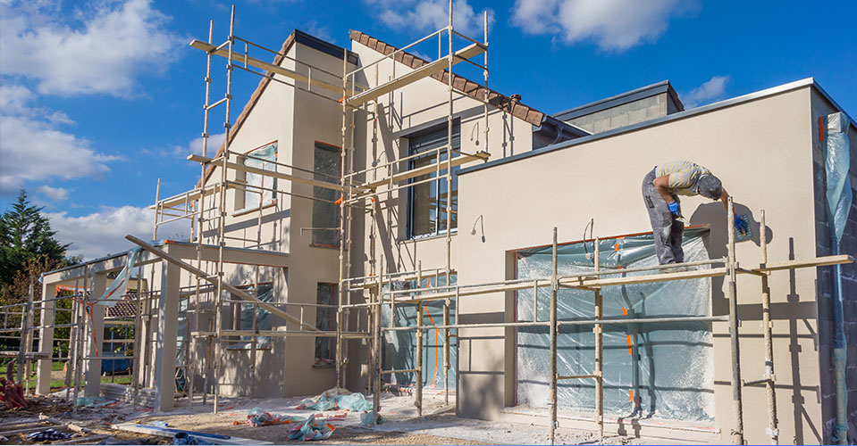
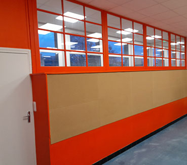

Nous oeuvrons au coeur de la matière, pour redonner vie a votre patrimoine.
De la préparation à la finition, travail soigné

Située à Le Neufbourg dans le département de la Manche, C&O Peinture et Déco est votre entreprise spécialisée dans les travaux de peinture autour d’Avranches, de Coutances et de Mortain-Bocage.
C&O Peinture et Déco c’est avant tout l’histoire de deux passionnés, Céline et Olivier qui, en tant qu’artisans peintres en bâtiment près de Granville et Villedieu-les-Poêles, mettent toute leur expertise en matière de décoration pour redonner du cachet à votre maison, à votre appartement ou à votre local professionnel. En confiant votre projet de rénovation de maison sur Mortain-Bocage (50), Avranches (50), Vire (14), Flers (61), Gorron (53) ou encore Fougères (35) à l’entreprise de peinture C&O Peinture et Déco, vous avez la garantie que votre décoration intérieure sera entre les mains de vrais artisans professionnels.

En tant que véritable binôme expérimenté dans les travaux de rénovation, Céline et Olivier assurent toutes les étapes de réhabilitation de votre intérieur, du sol au plafond. En tant qu’artisans peintres en bâtiment, Céline et Olivier œuvrent au cœur de la matière pour donner ou redonner vie à votre patrimoine.
En cela débute par le diagnostic de vos murs, plafonds, sols… En effet C&O Peinture et Déco effectue des tests hygrométriques pour vérifier le taux d’humidité des supports jusqu’à 5 cm. Si votre mur est par exemple trop humide pour vous garantir des travaux de rénovation de qualité, Céline et Olivier appliquent alors une solution assainissante.
Ensuite, C&O Peinture et Déco près d’Avranches effectue la préparation de vos murs et plafonds, neufs ou anciens, et applique avec soin sous-couche, peinture, enduits décoratifs, chaux (tadelakt), papiers peints dans les règles de l’art et dans le respect des tendances décoratives actuelles. De plus avec votre entreprise de peinture sur Mortain-Bocage, C&O Peinture et Déco, votre maison reste propre pendant et après vos travaux de rénovation.
En effet, Céline et Olivier, artisans experts en peinture du bâtiment près de Coutances n’utilisent que des peintures de qualité professionnelle pour vous garantir une finition durable et veillent tout particulièrement à protéger les éléments environnants comme vos sols, vos meubles, vos équipements électroménagers…
En tant qu’entreprise de rénovation sur Granville et Flers, C&O Peinture et Déco est également à votre service pour la restauration de vos boiseries. Que ce soit pour décaper et rénover vos volets en bois, remplacer une vieille moquette par un parquet, restaurer votre parquet ancien ou votre lambris, repeindre votre charpente et poutre apparente, restaurer votre escalier ou un meuble ancien en bois, vos portes et vos fenêtres en bois…
En plus de remettre la décoration intérieure de votre maison au goût du jour, C&O Peinture et Déco, artisans peintres près de Mortain-Bocage, se chargent également de vos façades. Vous pouvez ainsi faire appel à C&O Peinture et Déco près d’Avranches pour le nettoyage des façades de votre maison ou de votre local professionnel par sablage ou aérogommage, la préparation et l’application d’enduit et de peinture extérieure de vos murs et murets, la rénovation de votre sous-toiture en bois, le nettoyage de vos allées et terrasses en pierre, bois, carrelage et même la restauration de vos garde-corps métalliques.
Vous recherchez une entreprise de peinture sérieuse entre Avranches, Coutances et Vire ? Contactez dès à présent C&O Peinture et Déco à Le Neufbourg. Céline et Olivier, experts en rénovation sont à votre écoute pour étudier votre projet et vous proposer un devis gratuit.
Vous souhaitez rénover votre demeure de charme près de Houlgate, Deauville, Trouville, Cabourg… Faites le choix d’artisans spécialisés dans les belles demeures, choisissez C&O Peintures et Déco. En effet, grâce à leur expertise dans le diagnostic, traitement et remise en état des murs sols plafonds, Céline et Olivier redonneront le cachet de votre maison de maître ou maison bourgeoise, qu’il s’agisse de votre résidence principale ou de votre résidence secondaire du bord de mer.

La philosophie de l’entreprise de peinture C&O Peinture et Déco sur Mortain-Bocage est avant tout de vous fournir des prestations de qualité. Céline et Olivier sont ainsi à l’écoute de vos besoins et de vos souhaits pour vous garantir un résultat final qui répond parfaitement à vos attentes. Tous les paramètres de votre habitat ou de votre local professionnel comme les couleurs, les textures, les designs, le trafic sont ainsi pris en compte lors de l’étude de votre projet afin de le personnaliser au plus près de vos goûts et préférences.
Avec C&O Peinture et Déco vous avez ainsi l’assurance d’obtenir un service de qualité supérieure dans le respect de votre budget, que ce soit pour le rafraîchissement d’une pièce ou pour une rénovation intérieure totale de maison, d’appartement ou de local commercial.
En résumé, C&O peinture et Déco c’est :
C&O Peinture et Déco, entreprise de rénovation à Le Neufbourg intervient sur les secteurs de :